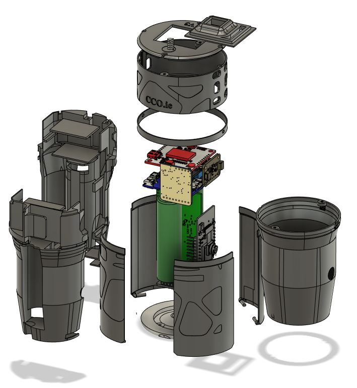
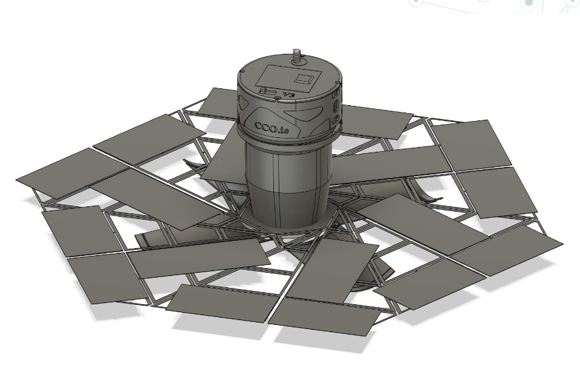

Description
As head engineer of our school's Cansat Team, I led three major redesigns of our can's exterior, base station, power management, and recovery mechanism as we progressed through regional, national, and international stages. Our final iteration featured: 3D printed medical-grade titanium exterior Two custom PCBs for electronics and antennae mounting Rigid origami folding solar array (my sole responsibility) Four fairings held by a retaining ring, secured to parachute cords Upon ejection from the rocket, the fairings opened outwards, deploying the array. The design process involved complete overhauls at each competition stage, demonstrating our commitment to continuous improvement and iterative design.
Outcome
First place in Irish CanSat National Finals 2023, represented Ireland in the European CanSat finals 2023 in Granada, Spain.
Attachments





